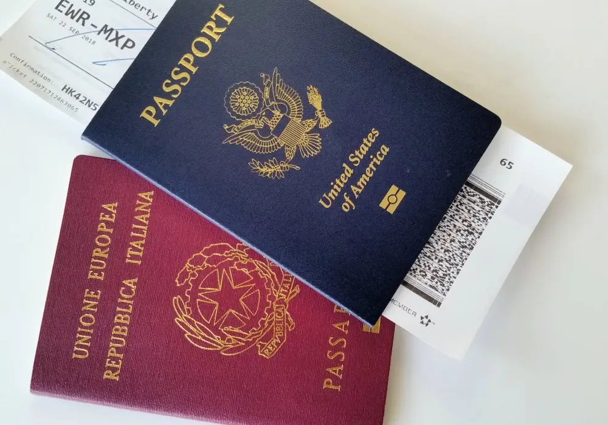

Key takeaways
- As of March 28, 2025, Italian citizenship by descent is limited to applicants with an Italian-born parent or grandparent
- The paperwork required is largely the same whether applying through a parent or grandparent — but more generations means more documents
- If your lineage passes through a female ancestor born before 1948, you have a 1948 case requiring a court filing
- Great-grandparent claims are no longer accepted for new applications filed after the law's effective date
How Law 74/2025 changed who can apply
Before March 28, 2025, Italian citizenship by descent (Jure Sanguinis) had no generational limit. Families with Italian great-grandparents, great-great-grandparents, or even more distant ancestors could apply, provided the legal requirements were met at each generational step.
Law 74/2025 imposed a two-generation cap. Today, to file a new application, you must have:
- A parent born in Italy, or
- A grandparent born in Italy, or
- A parent who lived in Italy for at least two years before your birth
If your only Italian ancestor is a great-grandparent or further back, you are no longer eligible to file a new application under the current law.
Applying through a parent
If one of your parents was born in Italy, yours is the most straightforward type of Jure Sanguinis claim. Your lineage is just one generation, and the key question is simply whether your parent was still an Italian citizen at the time you were born — meaning they did not naturalize in another country before your birth.
For more recent cases involving a parent who is still alive and was born in Italy, records are typically easier to obtain, and the citizenship chain is shorter and simpler to document.
Documents needed when applying through a parent
- Parent's Italian birth certificate (obtained from the Italian comune)
- Parent's marriage certificate (if applicable and relevant to the lineage)
- Applicant's own birth certificate — long-form certified copy
- Proof of parent's non-naturalization or naturalization date (naturalization certificate or Certificate of Non-Existence)
- Apostilles and certified Italian translations for all non-Italian documents
- Death record for the parent if deceased and in the direct line
Applying through a grandparent
Applying through a grandparent is equally valid under the 2025 law. The process is the same in structure but involves one additional generation of documentation. You must prove the citizenship chain from your grandparent (Italian-born) through your parent (who must not have been included in a naturalization that broke the chain) down to you.
The further back you go, the more important it becomes to verify naturalization dates carefully. Your grandparent may have emigrated in the early 20th century, and their records may require more research to locate.
Documents needed when applying through a grandparent
- Grandparent's Italian birth certificate (obtained from the Italian comune)
- Grandparent's marriage certificate (Italian or foreign)
- Parent's birth and marriage certificates
- Applicant's own birth certificate — long-form certified copy
- Naturalization records or Certificate of Non-Existence for the grandparent (if they emigrated)
- Apostilles and certified Italian translations for all non-Italian documents
- Death records for each ancestor in the direct line
- For 1948 cases: both spouses' documentation is required
What determines the closest ancestor to apply through?
Your application must be based on the closest direct Italian ancestor to the person who was born in Italy. In simple terms, you find the last person in your lineage who was legally an Italian citizen at birth. This will be one of the following:
- A parent or grandparent born in Italy who never naturalized in another country
- A parent or grandparent who was 21 or older when their own parent naturalized
- A parent or grandparent born in Italy who naturalized through marriage (and if this was before 1948, it triggers a 1948 case)

What is a 1948 case?
If your Italian lineage passes through a female ancestor whose child (your direct ancestor) was born before January 1, 1948, you have what is called a "1948 case." Under Italian law in effect at the time, women automatically lost their Italian citizenship upon marrying a foreign national. This meant their children were legally considered to have been born to a non-Italian mother, breaking the citizenship chain.
Italian courts have repeatedly held that this gender-based rule is unconstitutional and cannot be used to deny citizenship to descendants today. A 1948 case is a court petition — filed by a licensed Italian attorney — asking an Italian court to recognize that the citizenship was validly transmitted despite the historical discrimination. These cases have strong precedent and are regularly won.
Importantly, under Law 74/2025, the same generational limit applies: the female ancestor in your 1948 case must be a grandparent. If she is a great-grandparent or further back, the new generational restriction still applies to your claim.
1948 cases cannot be processed at a consulate or municipality — they must go through the Italian court system, handled by our partner Italian attorneys.
The paperwork requirement doesn't change with generation — but the volume does
Regardless of whether you are applying through a parent or grandparent, the types of documents required are largely the same. What changes is the number of records you need to assemble. Every generation in the chain requires its own birth, marriage, and death certificates, as well as evidence of citizenship status at the time of each child's birth.
This is one reason to act sooner rather than later: older records are harder to locate, may be damaged or incomplete, and may require more effort to obtain from Italian municipalities. Our document procurement team handles this process for clients from the United States, Canada, Argentina, Brazil, and elsewhere.